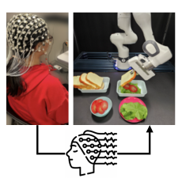
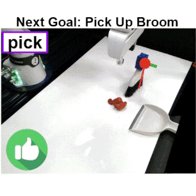
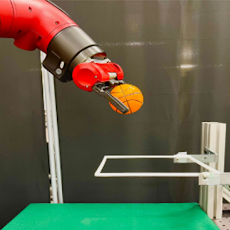
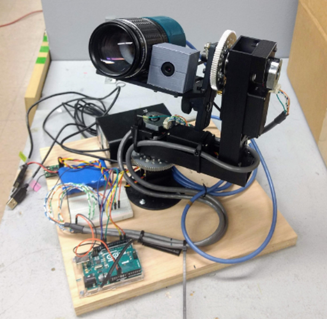
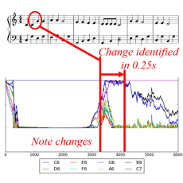
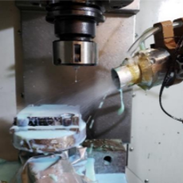
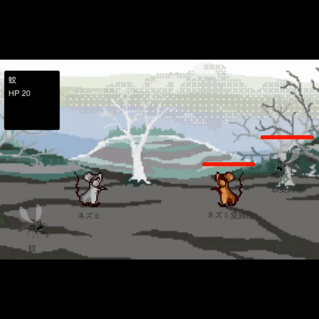
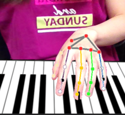
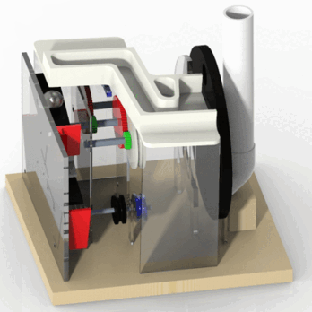

|
Ayano Hiranaka I am an incoming CS PhD student at University of Southern California (USC) co-advised by Professor Daniel Seita and Professor Erdem Biyik. Currently, I am working as a research intern at Sony AI, Tokyo. Prior to coming to USC, I completed my Master's degree at Stanford University, where I was a research assistant at Stanford Vision and Learning Lab (SVL) working with Prof. Fei-Fei Li , Prof. Jiajun Wu, and Dr. Ruohan Zhang. I received my undergraduate degree in mechanical engineering from the University of Illinois at Urbana-Champaign (UIUC). My experiences are a unique blend of computer science and mechanical engineering, ranging from AI to robotics to mechanical design. Email / CV / Google Scholar / Github |
{kind=link}
PublicationsI am passionate about designing robots that can be incorporated into everyday life as human companions. My research interest lies in developing methods that enable robots to communicate effectively and collaborate seamlessly with humans in households or public spaces, increasing the quality of human lives , while evolving alongside humans by learning from them. Topics of interest include human-in-the-loop learning, interactive human-robot collaboration, reinforcement learning, and imitation learning, especially for robotics applications. |

|
Human-Feedback Efficient Reinforcement Learning for Online Diffusion Model Finetuning
Ayano Hiranaka*, Shang-Fu Chen*, Chieh-Hsin Lai*, Dongjun Kim, Naoki Murata, Takashi Shibuya, Wei-Hsiang Liao, Shao-Hua Sun**, Yuki Mitsufuji** ICLR 2025 paper Finetuning text-to-image diffusion models for a variety of tasks in a human-feedback-efficient manner by combining feedback-aligned representation learning and feedback-guided image generation. |
|

|
NOIR: Neural Signal Operated Intelligent Robot for Daily Activities
Ruohan Zhang*, Sharon Lee*, Minjune Hwang*, Ayano Hiranaka*, Chen Wang, Wensi Ai, Jin Jie Ryan Tan, Shreya Gupta, Yilun Hao, Gabrael Levine, Ruohan Gao, Anthony Norcia, Li Fei-Fei, Jiajun Wu CoRL 2023 project page / paper Brain-robot interface system for everyday activities using EEG signal decoding, primitive skills, and robot intelligence aided by foundation models. |
|

|
Primitive Skill-based Robot Learning from Human Evaluative Feedback
Ayano Hiranaka*, Minjune Hwang*, Sharon Lee, Chen Wang, Li Fei-Fei, Jiajun Wu, Ruohan Zhang (*equal contribution, alphabetically ordered) IROS 2023 project page / paper Combining intuitive skill-based action space and human evaluative feedback, enabling a more safe and sample efficient long-horizon task learning in the real world. |
|

|
A Dual Representation Framework for Robot Learning with Human Guidance
Ruohan Zhang*, Dhruva Bansal*, Yilun Hao*, Ayano Hiranaka, Roberto Martín-Martín, Chen Wang, Li Fei-Fei, Jiajun Wu, Best paper award at Aligning Robot Representations with Humans workshop CoRL 2022 project page / paper A sample-efficient RLHF framework for low-level robot control policy leveraging a human-interpretable high-level state representation for active query. |
Research Projects |
|

|
Senior Capstone Project: Transient Object Spectrometer
University of Illinois at Urbana-Champaign, 2019 project report / video
Mechatronic system that detect, track, and collect spectral data from moving, light-emitting
objects in the night sky. |
|

|
Identification of Musical Note Played on Piano via Feedback Particle Filter
University of Illinois at Urbana-Champaign, 2019 project report
Real-time identification of a note played on a piano with a probabilistic approach using
a feedback particle filtering algorithm. |
|

|
Investigating the Effects of ACF Spray Angle and Distance on its Performance for Micro-Drilling
University of Illinois at Urbana-Champaign, 2019 project report
Investigation of atomization-based cutting fluid spray condition to maximize tool life
for deep micro-drilling. Automatic drill parameter measurements from microscope images
using keypoint detection. |
Miscllaneous Projects |
|

|
Retro-Style Simulation RPG in Unity
current progress / video
In progress retro-style simulaiton RPG in Unity. |
|

|
AR Piano Playing Using Real-Time Hand Tracking
Stanford University, 2022 project report
AR piano using real-time hand keypoint tracking from RGB webcam stream. |

|
Conun-Drum Bot: A Drum-Playing Humanoid Simulator
Stanford University, 2022 project report / video
Drum-player humanoid simulator that playes the beats speficied by a user. |
|

|
Mechanical Design Projects
University of Illinois at Urbana-Champaign, 2018-2019
A vegetable slicer operating from single crank input,
quadruped walking robot, and steel ball transporter mechanism. |
|
Website template borrowed from Jon Barron |